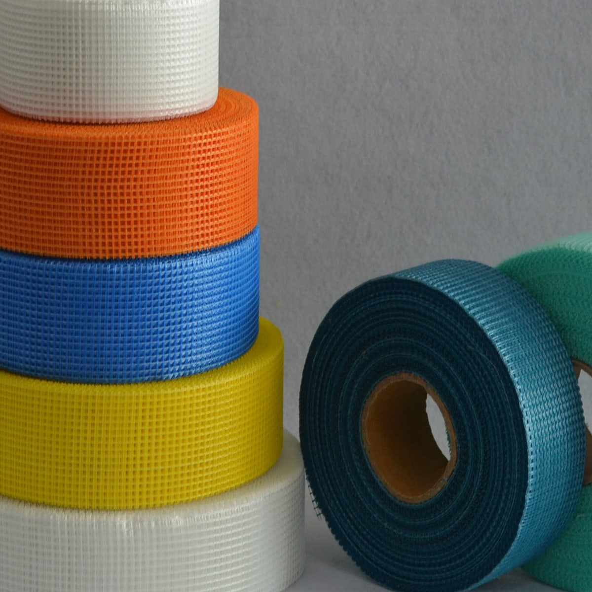

织造与涂覆
C-glass 或 E-glass 纱线织成网布，涂覆丙烯酸共聚物胶液后高温烘干定型。
2004 年成立于南通如皋，距上海港 2.5 小时车程。生产与外贸一体化的专业现代化企业。
南通高朋建材有限公司成立于 2004 年，位于江苏省如皋市，距离世界港口——上海港 2.5 小时车程。本公司已通过 ISO9001-2008 品质管理系统认证，是集生产和外贸于一体的专业现代化企业。
本公司主要生产玻璃纤维自粘带、金属护角带、接缝纸带、玻璃纤维毡带、金属补墙板等系列产品。公司自成立以来，始终坚持以严格的品质管理体系对所有产品进行质量控制，以具竞争力的价格以及服务赢得了超过 20 多个国家和地区的客商与我们进行长期友好的合作。
我们坚信：以我们物美价廉的产品为广大客商带来竞争优势和宝贵的财富。
C-glass 或 E-glass 纱线织成网布，涂覆丙烯酸共聚物胶液后高温烘干定型。
网布加涂不干胶后，按各市场包装标准分切成不同宽度与长度的成品卷。
按 20GP、40HQ 柜型制定装箱数量与装柜方案，配套出口纸箱包装。

C-glass 与 E-glass 纱线，自有织造与涂覆，再按各市场的需求分切成型。
已通过 ISO9001 品质管理体系认证超过十年，所有产品在同一套质量控制体系下生产后才允许出厂。